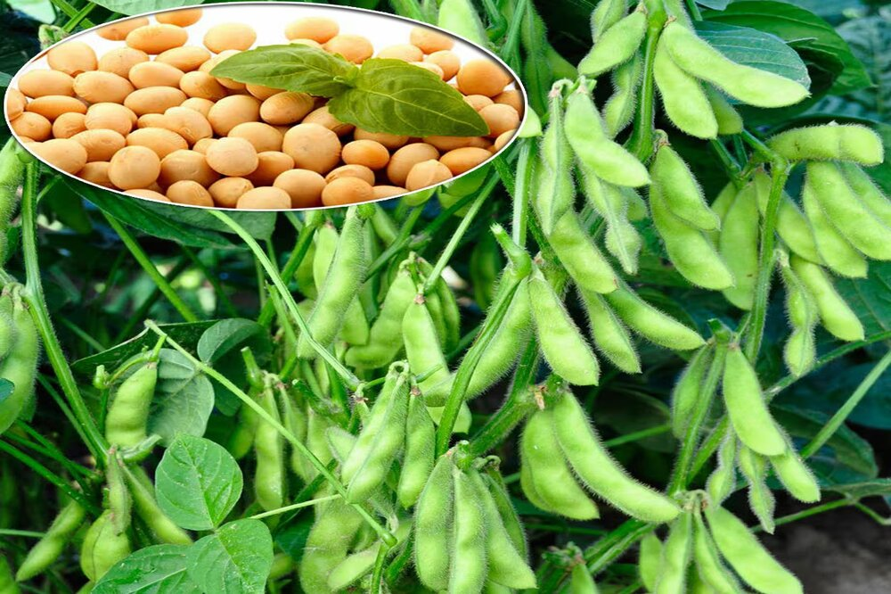
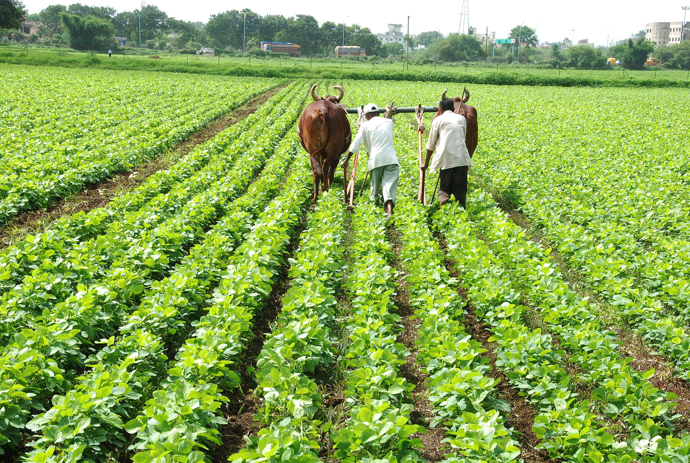

Soybean
Soybeans are a versatile legume that is an excellent source of protein and essential nutrients. They are used for a variety of purposes such as food, animal feed, and industrial products. Soybeans are an important crop for farmers worldwide, and they are relatively easy to grow.
Cost of Planting Soybean
Planting soybeans typically costs between ₹8000 to ₹16000 per acre, depending on factors such as seed cost, fertilizer, and fuel. However, the cost can be higher or lower depending on the specific location and farming practices.
Return after selling Soybean
The return on investment for soybeans can vary greatly depending on market conditions, but on average, farmers can expect to earn between ₹32000 to ₹40000 per acre. This can provide a good return on investment for farmers and make soybean farming a profitable venture.